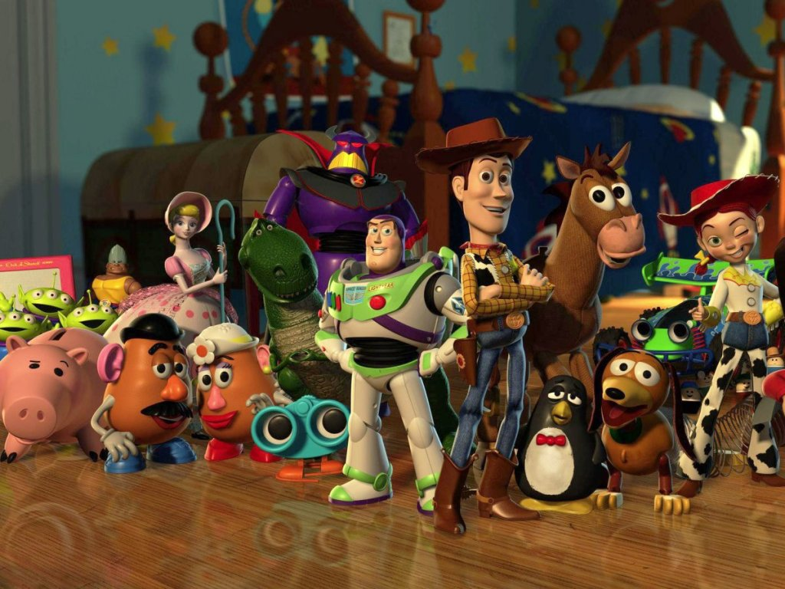

About Woody
"Woody, he's brave like a cowboy should be. And kind and smart, but the thing that makes Woody special is he'll never give up on you ever! He'll be there, no matter what."-Andy
Woody and his friends
Woody's characteristics
- He's a great leader
- He always puts other before himself
- He'll never leave a toy behind
Woody's Friends
Woody's friends are all special in their own ways. Although Woody is Andy's favorite toy they do not evny or resent him. They don't always trust Woody's decisions or judgement, however they recoginze when they are wrong and are humble enough to admit to their mistakes and ask for forgiveness. Click on the links below to learn more about each individual.